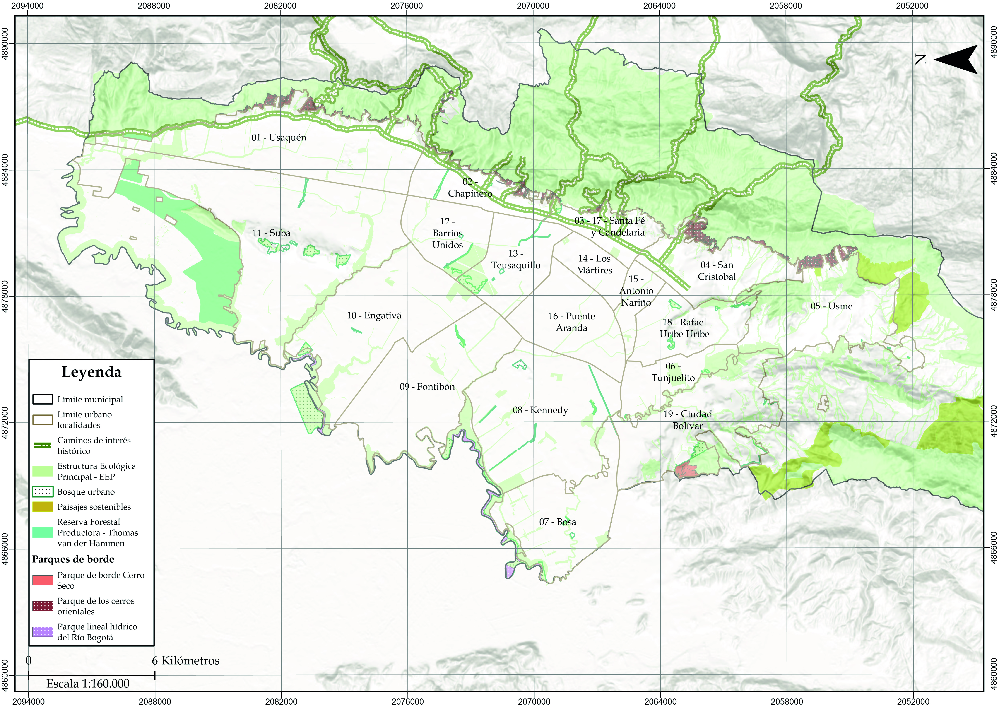
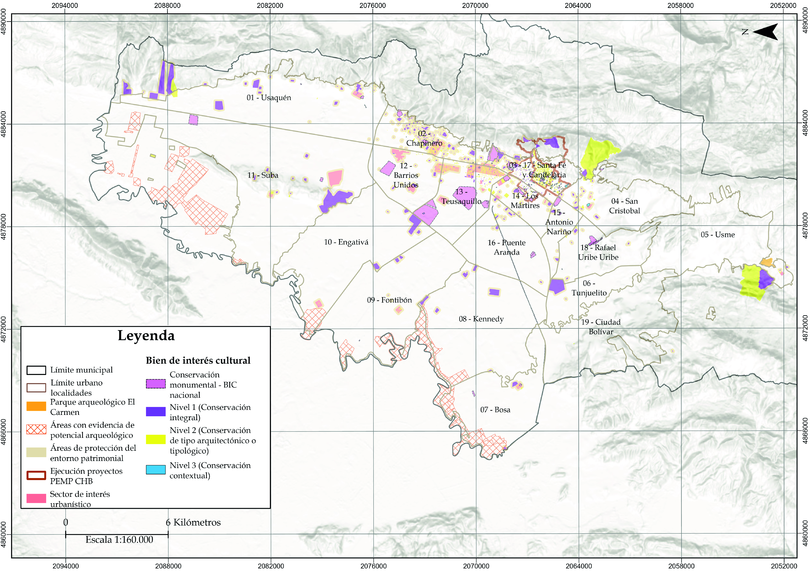
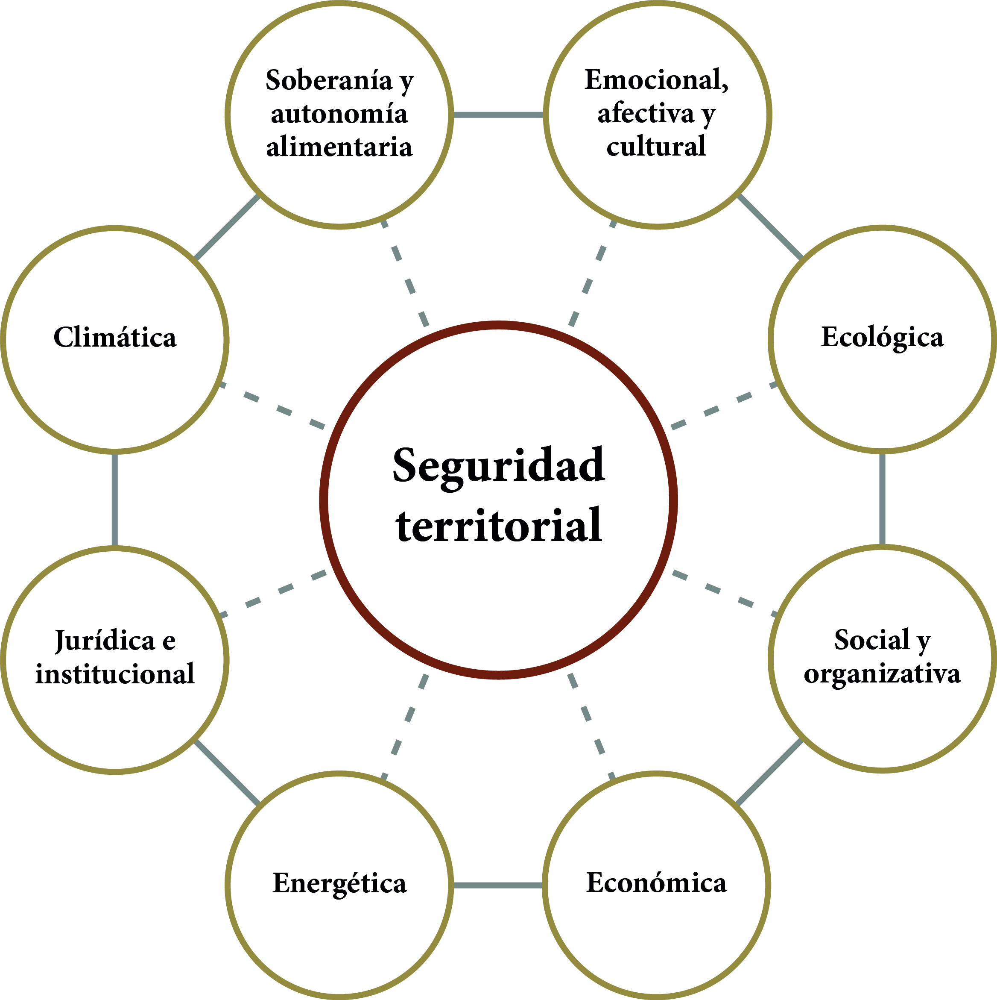
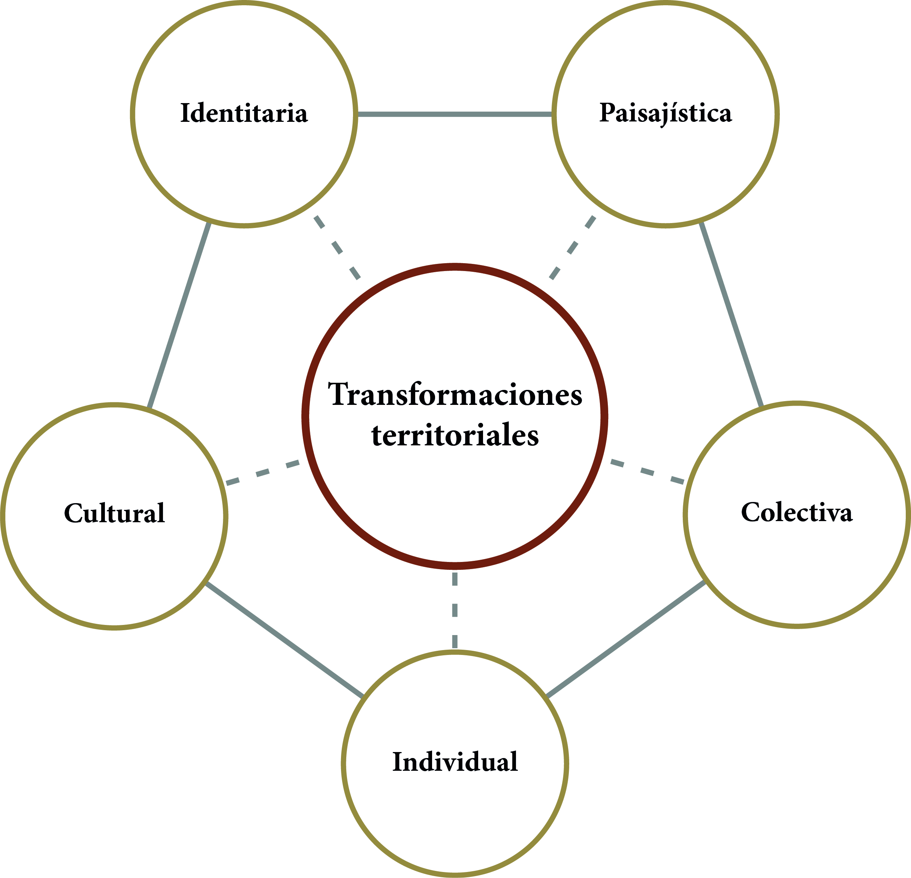
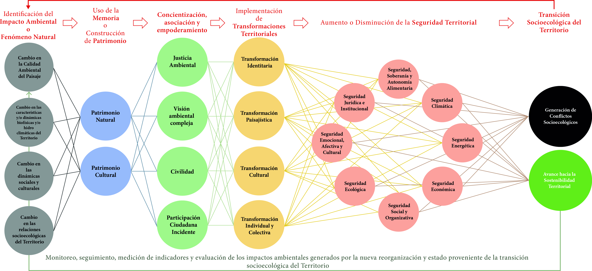

Unidad 4.2 Paisaje, identidad y sostenibilidad territorial
El territorio urbano y rural de Bogotá y su región se encuentran inmersos en una crisis socioecológica profunda, caracterizada por los conflictos socioecológicos, una urbanización acelerada, la degradación ambiental y la crisis climática que genera miedo y desesperanza en sus habitantes. Esta crisis no es meramente ambiental; es una crisis de homogenización cultural, de seguridad territorial en toda su extensión, de falta conciencia ambiental, memoria y justicia ambiental.
Sin embargo, desde el marco de análisis territorial propuesto en esta Sección, esta crisis no es solo una amenaza, sino una oportunidad histórica, que nace de la esperanza, la memoria, la civilidad y la participación ciudadana, que propicie una reorganización que conduzca hacia un territorio más resiliente, justo y sostenible.
La seguridad territorial, se ve constantemente desafiada por transformaciones territoriales mal adaptadas que se manifiestan en conflictos socioecológicos e injusticias ambientales. Esta Sección explora las buenas estrategias adaptativas 1, coevolutivas 2 y también las mal adaptadas 3 que generan conflictos socioecológicos e injusticias ambientales, e impactan las distintas dimensiones de la seguridad territorial, tomando como marco conceptual el ciclo adaptativo y la estructura panárquica de Bogotá.
3.1. Marco conceptual para la sostenibilidad territorial
3.1.1. Patrimonio natural y cultural
Es el legado natural y cultural —material e inmaterial—, que se transmite de una generación a otra, constituyendo un acervo invaluable para la vida y la cultura, es representado en los elementos tangibles e intangibles reconocidos formalmente por el Estado o por los habitantes. La Ley 388 de 1997 y el Decreto 555 de 2021 —POT—, reconocen tanto la Estructura Ecológica Principal como los bienes culturales tangibles, ente otros en los instrumentos de ordenamiento territorial.
El patrimonio natural y cultural es el insumo que tienen los habitantes para guiar las transformaciones territoriales necesarias, actuando en armonía con la naturaleza y la cultura del territorio.
Mapa 17. Patrimonio natural reconocido formalmente por el Decreto 555 de 2021

Fuente: Elaboración Sociedad de Mejoras y Ornato de Bogotá con información de SINUPOT.Mapa 18. Patrimonio cultural material reconocido formalmente por el Decreto 555 de 2021

Fuente: Elaboración Sociedad de Mejoras y Ornato de Bogotá con información de SINUPOT.3.1.2. Memoria
Constituye el proceso vivo de significación colectiva que da sentido al patrimonio tangible e intangible, natural y cultural, rescatando saberes y conocimientos actuales y ancestrales, prácticas, costumbres e identidades. La memoria incluye los saberes tradicionales de las culturas que han habitado el territorio, la generación de conocimiento científico sobre el mismo, las costumbres de los ciudadanos, la educación y formación de los habitantes más jóvenes.
La memoria es el núcleo de la identidad. Recuperar historias de lucha y éxito comunitario, celebrar fiestas tradicionales, festivales que visibilicen la historia y reconocer la diversidad biocultural que define a Bogotá son actos que reconstruyen una identidad consciente, crítica y resiliente, capaz de orientar las transformaciones territoriales necesarias para la sostenibilidad territorial.
3.1.3. Seguridad territorial
La capacidad de un territorio para ofrecer condiciones de estabilidad dinámica a sus ecosistemas, emerge de las interacciones positivas entre sus dimensiones constitutivas. La seguridad territorial no es estática, es un equilibrio dinámico que debe ser constantemente evaluado y construido. El concepto de seguridad territorial 4 coincide con el de resiliencia socioecológica que hace referencia al atributo que permite absorber el cambio y adaptarse. Así una seguridad territorial integral y duradera es el objetivo para lograr la sostenibilidad territorial.
Imagen 20. Dimensiones de la seguridad territorial y su interrelacionamiento

Fuente: Elaboración Sociedad de Mejoras y Ornato de Bogotá, modificado de Gustavo Wilches-Chaux.
3.1.4. Transformaciones territoriales humanas
Las transformaciones territoriales humanas son acciones, herramientas e instrumentos que surgen desde lo individual y colectivo, y transforman algún aspecto del territorio en diferentes escalas. En otras palabras, son el motor del cambio, las intervenciones deliberadas de la sociedad que pueden impulsar la transición de los sistemas socioecológicos hacia una reorganización, ya sea para la sostenibilidad territorial o para generar conflictos socioecológicos. Se clasifican en cinco escalas interconectadas que se representan en la siguiente imagen. Su éxito o fracaso se mide por su impacto positivo o negativo en las dimensiones de la seguridad territorial.
Imagen 21. Tipos de transformaciones territoriales y su interrelacionamiento

Fuente: Elaboración Sociedad de Mejoras y Ornato de Bogotá modificado de Gustavo Wilches-Chaux.
La transición socioecológica implica recordar para valorar el conocimiento local y las prácticas tradicionales de manejo del territorio, practicando la civilidad en las relaciones con otros ciudadanos, el ambientalismo complejo con otros seres y el componente natural, e innovando en las maneras de significar el patrimonio, la relación naturaleza-cultura, y el componente natural del paisaje, creando nuevos valores y transformaciones individuales, colectivas, culturales, paisajísticas e identitarias.
Por otro lado, la educación ambiental compleja 5 para los habitantes de todas las edades, emerge como componente clave en este proceso, ya que permite formar y capacitar ciudadanos capaces de comprender cómo es su territorio, y participar activamente en la construcción de paisajes con calidad ambiental y bienestar materializando el cómo debería ser el territorio.
3.2. Análisis territorial complejo
El análisis territorial para la sostenibilidad, visto desde la complejidad, los ciclos adaptativos y el modelo panarquico, busca comprender cómo las diferentes escalas en las que ocurren las transformaciones territoriales humanas impactan las dimensiones de seguridad territorial positivamente; si se implementan siguiendo los principios de los conceptos del ambientalismo complejo, la justicia ambiental, la civilidad, la memoria, y la participación individual o colectiva incidente, generando avances hacia la sostenibilidad territorial, e ineludiblemente la generación de conflictos socioecológicos que deberían tratar de prevenirse o mitigarse.
Imagen 22. Marco analítico para plantear las respuestas ante impactos ambientales o fenómenos naturales

Fuente: Elaboración Sociedad de Mejoras y Ornato de Bogotá.Desde una perspectiva integradora de lo urbano y lo rural, el territorio sostenible al cual se busca avanzar en la transición socioecológica se entiende como una creación social en la que se identifican, consolidan y acuerdan participativamente visiones y transformaciones territoriales para el manejo y ordenamiento del territorio, con el fin de lograr el bienestar y la seguridad territorial de su población a lo largo del tiempo.
A continuación, se definen las escalas de las transformaciones territoriales y se proponen algunas acciones prácticas que las materializan en impactos en la seguridad y sostenibilidad territorial.
3.2.1. Transformaciones individuales y colectivas
Estas transformaciones se dan desde la toma de conciencia del individuo y tienen la capacidad de generar cambios en colectivos y la sociedad en general. Buscan adoptar nuevos valores, interpretaciones y prácticas a pequeña escala que cambien la manera de relacionarse con el Territorio. Estas transformaciones tejen redes de confianza desde abajo, que son capital social crucial para la seguridad territorial y resiliencia del territorio.
La adopción de hábitos de consumo responsable, separación y manejo integral de residuos, movilidad limpia —bicicleta, transporte público o privado sin emisiones—, ahorro de agua y formas más respetuosas de relacionarse con la naturaleza y la otredad son ejemplos de transformaciones individuales que, al masificarse, se convierten en colectivas. Revitalizar la memoria de prácticas de asociatividad colectiva y comunidad, espacios de diálogo, celebraciones y el cuidado comunitario de fuentes de agua y ecosistemas, provee un modelo ético y práctico para la acción colectiva, mostrando que la organización es posible y necesaria.
3.2.2. Transformaciones culturales
Estas transformaciones ocurren en escalas espaciales y temporales que integran varios individuos y colectivos, y tienen la capacidad de generar cambios en los valores, creencias, normas, prácticas y costumbres que dan forma a la sociedad.
De la cultura forman parte el uso del suelo, el aprovechamiento del agua lluvia, la ciencia y la tecnología moderna —biomateriales, compostaje, inteligencia artificial, criptomonedas y los SIG—, las instituciones públicas y privadas, la industria y sus prácticas, las organizaciones sociales, los sistemas políticos, los sistemas legales, las redes sociales, el arte, la filosofía, los modelos y prácticas económicas que la sociedad adopta, y todas las demás expresiones de esa huella profunda que deja el paso de la especie humana por el planeta.
Las transformaciones culturales aportan muchos de los conocimientos y herramientas para imaginar y responder a esta complicada crisis socioecológica, debido a sus impactos en la seguridad económica, jurídica e institucional, social y organizativa; así como la emocional, afectiva y cultural. Actualmente hay una gran capacidad de los humanos para expresar la cultura en escenarios digitales y presenciales, por lo que se deben aprovechar los espacios de diálogo y conexión de colectivos para plantear nuevas visiones que apoyen transformaciones culturales para avanzar hacia la sostenibilidad territorial.
Las transformaciones culturales necesarias incluyen: marcos normativos flexibles que promuevan la descentralización industrial y gubernamental de Colombia; políticas de pago por reforestación y por servicios ambientales, declaración de reservas forestales regionales o de la sociedad civil y áreas protegidas en los ecosistemas nativos remanentes, subsidios por prácticas sostenibles, reforma agraria, legislación que reconozca las dinámicas de los sistemas socioecológicos y la incorporación de la memoria en los instrumentos de planificación. Estas acciones sincronizan todas las escalas, permitiendo que las innovaciones locales sean efectivas y tengan repercusión a futuro.
Un Estado rígido, con normativas contradictorias, poca capacidad de aplicación y capturado por intereses particulares, es una trampa institucional a la cultura. Este conflicto socioecológico de gobernanza genera tensiones, paraliza la acción, impide la innovación y genera desconfianza, erosionando la seguridad jurídica e institucional y, por extensión, todas las demás.
La memoria, a través del patrimonio cultural, bases de datos, recetas y alimentos tradicionales, relatos de abuelos sobre paisajes pasados y topónimos originarios, eventos políticos y jurídicos históricos, y la resignificación de la relación naturaleza cultura proporciona el sustrato para una reorganización cultural. Es la brújula que señala que otra forma de habitar, más sostenible y significativa, no solo es posible, sino que ya existió.
3.2.3. Transformaciones paisajísticas
Estas transformaciones ocurren en escalas espaciales de decenas de kilómetros y temporales de períodos de gobierno y planeación —4 a 12 años—, debido a que dependen de que ocurran transformaciones culturales que las propicien primero, y de ritmos y escalas de procesos ecológicos que toman varios años.
Son transformaciones paisajísticas que tienen impactos positivos en la sostenibilidad territorial: Intervenciones como la protección y restauración de humedales, páramos y bosques alto andino por su importancia en la producción y regulación del agua, la conservación y uso sostenible de áreas de protegidas, los sistemas silvopastoriles y agroforestales, el uso de zanjas y camellones para agricultura en zonas inundables, agricultura orgánica, intensiva y sostenible en las zonas planas, la creación de corredores verdes y cercas vivas con flora nativa, el reverdecimiento urbano, el ecourbanismo y la construcción sostenible, y la implementación de sistemas urbanos de drenaje sostenible.
Estas acciones son la materialización más directa de la seguridad ecológica, climática, hídrica y alimentaria, así mismo, regulan el ciclo hídrico, la temperatura al evitar el efecto “isla de calor urbano”, mitigan inundaciones, albergan biodiversidad, conservan o restauran paisajes naturales y agrícolas, y mejoran la calidad del aire. Además, aumentan la seguridad social, organizativa y cultural al proveer espacios de recreación y encuentro, y pueden incrementar el valor de propiedades aledañas —seguridad económica—.
La urbanización y suburbanización expansiva, que impermeabiliza los suelos con malas adaptaciones paisajísticas que a menudo resultan de una transformación, que prioriza la seguridad económica y social a corto plazo, sobre la seguridad territorial y resiliencia a largo plazo. El conflicto socioecológico es evidente: inundaciones recurrentes que dañan infraestructura —afectando la seguridad económica y social—, “islas de calor” que aumentan el consumo energético —afecta la seguridad energética y climática—, y la fragmentación de ecosistemas —seguridad ecológica e hídrica—.
La memoria del paisaje original —donde fluían las quebradas, como eran los humedales, la composición de los bosques nativos— actúa como un plan maestro ecológico, que guía las intervenciones de restauración hacia un estado que no es meramente “verde”, sino funcional y adaptado al territorio.
3.2.4. Transformaciones identitarias
Estas transformaciones son las más largas en las escalas temporales y espaciales. Se completan en el tiempo en que las personas puedan empezar a ver los cambios culturales y paisajísticos que pueden tomar decenas de años o varias generaciones.
Procesos de cartografía social donde las comunidades mapean sus afectaciones y vulnerabilidades son ejercicios que guían las transformaciones identitarias al plantear transformaciones individuales, colectivas, culturales y paisajísticas que se puedan materializar en el territorio. También procesos de educación ambiental o desarrollo de proyectos turísticos o ecoturísticos, generan nuevas valoraciones del entorno natural —seguridad afectiva, emocional y cultural— y de la relación con el componente natural del territorio —seguridad ecológica, climática e hídrica— generando además nuevas oportunidades económicas y sociales —seguridad económica, social y organizativa—. Estos ejercicios construyen una identidad territorial resiliente consciente de su lugar en el sistema.
Esto fortalece todas las dimensiones de la seguridad indirecta o directamente, ya que una comunidad con una identidad sólida y conectada a su territorio está más motivada para organizarse —seguridad social y organizativa—, expresando su cultura, sus características artísticas, económicas y científicas, que inciden en el potencial del territorio de manera local —seguridad económica y cultural—, exigiendo y cumpliendo con sus derechos y deberes —seguridad jurídica e institucional—, y cuidando su entorno —seguridad ecológica, climática, hídrica y alimentaria—.
Una identidad territorial débil o degradada, marcada por el desapego y la desesperanza, disminuye la motivación para actuar de las comunidades, puesto que no tiene un sentido de pertenencia. Se manifiesta como apatía generalizada, dificultad para concertar visiones de futuro y abandono del espacio público, lo que debilita progresivamente todas las capas de la seguridad territorial.
3.3. La sostenibilidad territorial
La sostenibilidad territorial de Bogotá-Región depende de la capacidad de la capacidad de la red de interacciones para responder, sin desestabilizarse y sin deterioro de la calidad ambiental y de la vida de sus habitantes, a retos provenientes de fenómenos como la globalización, el conflicto armado, los efectos de un desastre de origen natural o humano, o los distintos cambios que pudieran producirse, por cualquier causa, en el escenario geopolítico internacional.
El análisis territorial complejo revela que las injusticias ambientales y los conflictos socioecológicos no son hechos aislados; son síntomas de transformaciones mal adaptadas que erosionan la seguridad territorial, dejando a la comunidad más vulnerable a otros impactos ambientales, conflictos socioecológicos o fenómenos naturales. Por el contrario, las buenas estrategias adaptativas y coevolutivas son aquellas transformaciones territoriales que, enraizadas en la memoria, logran impactar positivamente múltiples dimensiones de la seguridad de forma simultánea, creando sinergias y bucles de retroalimentación positiva que fortalecen la resiliencia del sistema.
Tanto los conflictos socioecológicos como los avances hacia la sostenibilidad territorial permiten diagnosticar las transformaciones territoriales prácticas, los fenómenos o los actores que truncan o potencian la sostenibilidad territorial. Con este diagnóstico claro, se debe hacer memoria del patrimonio natural y cultural, replantear valores éticos, morales y culturales, e implementar prácticas, leyes o políticas públicas más sostenibles para la generación de identidades territoriales, que propicien la sostenibilidad territorial.
La seguridad jurídica e institucional es la dimensión que puede tanto catalizar como bloquear el cambio. Esto implica diseñar políticas públicas que consideren tanto los ritmos y escalas de los sistemas sociales y de los ecosistemas, así como las necesidades y saberes de las comunidades.
La transición socioecológica hacia la sostenibilidad territorial en Bogotá es un proceso de reorganización consciente y guiado, no sucederá por accidente. Requiere de la articulación deliberada de actores y transformaciones territoriales en todas las escalas —desde el cambio de hábitos individuales hasta las grandes políticas de reordenamiento del paisaje—, todas orientadas por la brújula ética de la memoria.
La Bogotá rural y urbana, como un laboratorio vivo de experimentación adaptativa para la sostenibilidad territorial, se fortalece de cada acción de afecto, cuidado, solidaridad, y civilidad; cada participación ciudadana incidente, cada mural, cada obra de arte, cada canción, cada película, cada empresa o institución, cada huerta urbana, cada SUDS, y cada cartografía social.
Documentando rigurosamente estos experimentos —sus éxitos y fracasos—, y aprendiendo colectivamente de ellos, la ciudad puede escapar de las trampas que la confinan, y transitar a través de la guía de la memoria y el impulso de las transformaciones territoriales, hacia un futuro de auténtica seguridad y sostenibilidad territorial para todos sus habitantes, humanos y no humanos.
Sección 4.3.2 La Región hídrica de Bogotá y su Estructura Ecológica Principal Sección 5.1.2 Sistema de Servicios Públicos
Footnotes
-
Proceso mediante el cual un organismo, sistema o persona se ajusta y desarrolla la capacidad de sobrevivir y funcionar en un entorno o situación determinada. ↩
-
La coevolución es el proceso en el cual dos o más especies influencian el cambio evolutivo una de la otra, dando lugar a adaptaciones recíprocas debido a sus interacciones ecológicas. ↩
-
Una acción de adaptación que, en lugar de reducir la vulnerabilidad, la aumenta o traslada sus impactos a otras personas o lugares. ↩
-
El detalle de los componentes de seguridad territorial se encuentra en: Gustavo Wilches-Chaux. El concepto herramienta de seguridad territorial y la gestión de humedales. Biodiversidad en la práctica (Bogotá: Instituto Humboldt. Volumen 2, número 1, 2017), 95. ↩
-
Ibid., 155-179. ↩